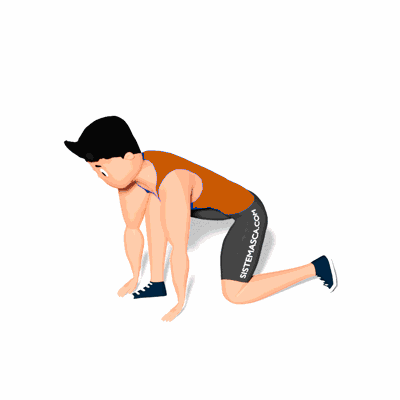

Alongamento de Cadeia Posterior em Afundo

O exercício tem como objetivo trabalhar o alongamento da cadeia posterior, auxiliando na execução de atividades físicas e atividades diárias.
Ficha Técnica
Tipo: Alongamento
Grupo Muscular: Perna
Aparelho: Nenhum
Músculos: Nenhum
Como realizar
- Projete uma das pernas a frente e realize o avanço. Desça o tronco numa posição vertical, com um alinhamento de pernas num ângulo de 90°;
- Apoie as mãos no solo;
- Mantenha as mãos no solo e estenda as pernas levando o quadril para cima;
- Alongue o máximo que conseguir e em seguida retorne a posição inicial.
 RC STORE
RC STORE